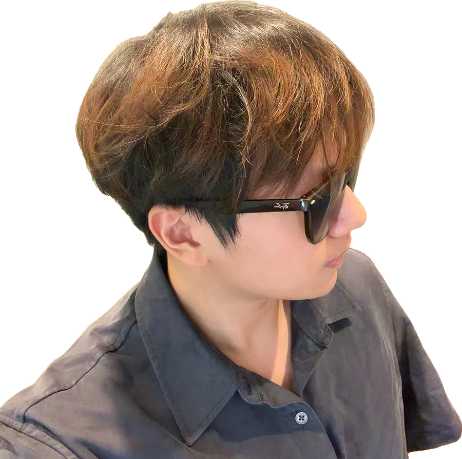

Locrian
我做影视后期声音、空间音频和生成式音乐。让 AI 作为手段，把视觉、听觉和嗅觉接到一起。

关于我About
从录音艺术出发，做影视后期声音、空间音频与生成式音乐。
China录音艺术UK音频科技
让 AI 科技作为手段，
目标是打通视、听、嗅的通感体验。
— 李上 Locrian
- 影视后期声音制作人post sound
- AIMV 制作人AI music video
- AIGC 创意社创始人founder
- 中国传媒大学 AI 部创始人founder
- 录音师recording
- 音乐香水品牌主理人scent
声音作品
声音是我看世界的方式。从同期录音到三维声场，作品在 VR、影像和音乐厅里同时成立。
音乐制作
音乐是我记住它的方式。作曲、编曲、混音到发行，给游戏和影像写配乐，也写自己的歌。
AIGC 与产品设计
让前两件事能被反复使用的那层结构。判断模型的能力边界，把想法压成一版能点开的东西。
声音作品Sound works
六件作品。VR、影像、空间音频与交响同期。
按住卡牌左右拖动，切换作品
音乐制作Music
纯四度，调式里唯一没被降低的音。写歌是我最早开始做的事。
网易云认证音乐人，单曲最高播放破万。从高中开始写歌，钢琴和电子琴打底，编曲、作曲、混音独立完成。
AIGC 与产品设计AIGC & product design
三全音，调式里最不稳定的一个音。也是我最想往前推的一条线。
经历Journey
不是履历表。几段时间，让我变成现在这样。
-
2021七月，北京
中国传媒大学，录音艺术（音响导演）
四年在录音棚和现场之间来回。VR 毕设《白房间》做声音总监，从场景音效、空间音频到配乐全部自己走完。本科优秀毕业生。
-
2024七月，北京
阿里巴巴虎鲸文娱（优酷），AI 产品经理实习
参与一站式 AIGC 动画产品“鲸锐 AI”的竞品研究、需求评审和生成效果验收，为 AI 分镜产品写调研和 PRD，再和算法、设计、研发一起推进落地。也为 AI 剪辑工作站的音频库搭了音效标签体系和搜索匹配逻辑，并测试评估 TTS 语音模型和音效库。
-
2024八月，北京
IdeaSign AI 设计工作室，创始人
《我的海淀印象》拿到大学生 AI 艺术季海淀专项赛道特等奖，受邀在行业论坛分享，也在杭州数字艺术展展出。做的事从需求定义一直延伸到能点开的原型。
-
2024八月，北京
中国传媒大学 AIGC 创意社，创始人兼社长
自发办起来的校内 AIGC 社团。联动字节汽水音乐、快手可灵 AI、智谱清言和阿里优酷，办了多场 AI 创作活动，还作为主办方策划了全国首届 AI 音乐及 AI MV 创作赛事。
-
2025二月，北京
中国传媒大学校团委 AI 部，创始人兼部长
受学校老师任命，从零搭起校团委的 AI 职能部门。主导研发内部 AI 智能体，用在校园办公和宣传场景，项目获评校级大学生创新创业优秀项目。
-
2025七月，伦敦
伦敦大学学院 UCL，音频体验设计硕士
MA Designing Audio Experience。在伦敦做空间音频：高阶环绕声设计、广播音频、声音艺术展策划。毕业设计把网页前端和 REAPER 接成一个播放器，让视听作品能在多声道声场里被完整听见。参与 V&A Museum CMMR2025 声音艺术展的空间音频交互逻辑设计与落地调试。
-
2026十月
字节跳动，AI 音频模型运营与交付实习
为 AI 音乐生成的 Reward Model 做成对比较和质量打分，推进音频 Caption 数据的生产与优化，并用 MOS/CMOS 方法做主观质量评测，给模型迭代提供数据。